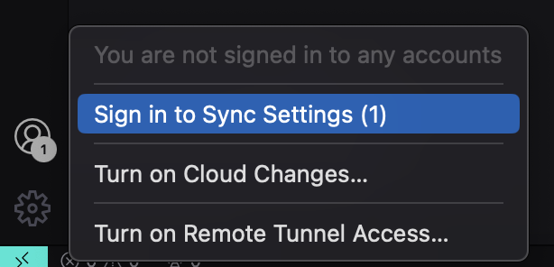

GIT e Github
>Voltar
Breve Resumo Git
Instalar
GitHub
Como configurar o Github no VsCode
Primeiros Comandos
git push (Empurrar)
git pull (Puxar)
git clone
git init
Subtítulo
Super Resumo do DevClub
Sobre o Autor e Este Projeto
>Voltar
Breve Resumo Git
ChatGPT O Git é um sistema de controle de versão distribuído amplamente utilizado para o desenvolvimento de software, conhecido por sua eficiência e flexibilidade. Criado por Linus Torvalds em 2005, Git permite que desenvolvedores acompanhem e gerenciem alterações no código-fonte ao longo do tempo, facilitando colaborações em equipe e o rastreamento preciso de históricos de alterações. Utilizando um modelo de ramificação leve e fusão simples, Git permite que múltiplas versões de um projeto sejam desenvolvidas simultaneamente, promovendo um fluxo de trabalho não linear e facilitando a experimentação e desenvolvimento paralelo.
Instalar
Acesse este site! https://git-scm.com/book/pt-br/v2/Come%C3%A7ando-Instalando-o-Git
GitHub
GitHub é uma plataforma online baseada em Git, amplamente utilizada por desenvolvedores para hospedar, compartilhar e colaborar em projetos de software. Lançada em 2008, GitHub oferece funcionalidades avançadas além do controle de versão, como controle de acesso, gerenciamento de problemas (issues), pull requests (solicitações de alteração), integração contínua e hospedagem de páginas web. Com sua interface amigável e recursos sociais, GitHub facilita a colaboração global entre desenvolvedores, permitindo que equipes trabalhem de forma eficiente em projetos de código aberto e privados, promovendo transparência, revisão de código e aprimoramento contínuo de software.
Crie uma conta https://github.com/
Como configurar o Github no VsCode
Abra o terminal no VSCode, se for windows escolha o terminal Git Bash
Digite:
git config --global user.email (seu-email)
Sem erros - está OK
git config --global user.name (seu-username)
Agora para testar quais dados foram use
git config --list
Agora temos esses dados no GIT, Então faça login no User Sync com Github
Primeiros Comandos
O comando git add é usado para adicionar mudanças no seu repositório local à área de stage (preparação) em um repositório Git. A área de stage é onde você reúne todas as mudanças que deseja incluir no próximo commit.
Pode-se adicionar um arquivo específico
git add nome_do_arquivo
Ou adicionar todos os alterados assim:
git add .
Ou podemos add todas as mudanças e inclusive arquivos deletados usando
git add -A
Podemos commitar assim:
git commit
Ao usar apenas git commit, o Git abrirá o editor de texto padrão configurado para que você possa digitar a mensagem de commit.
Podemos escrever: git commit -a -m "Sua mensagem de commit aqui"
A flag -a instrui o Git a automaticamente adicionar todos os arquivos modificados e deletados à área de stage antes de criar o commit. Note que novos arquivos (não rastreados) não são incluídos automaticamente e ainda precisam ser adicionados manualmente usando git add.
git commit -m "Assunto" -m "Descrição..."
Para termos maior profissionalismo ainda pode-se add uma Descrição
Git Lens e Git Graph
git push (Empurrar)
Podemos clicar no Botão Publish Branch que é equivalente ao git push
Assim ele envia para o Github a branch com a qual estamos trabalhando
Como ver qual branch estamos? git status
A primeira vez demora mais, escolhemos o nome do Repositório e conferimos no site github.com
git pull (Puxar)
Pelo source controll -> clicar nos 3 pontinhos e pull
Ou usar o codigo
git pull
Lembrando que já devemos ter clonado o repositorio remoto
git clone
git init
Este comando deve ser executado no diretório que você deseja transformar em um repositório Git. Após a execução, o diretório se tornará um repositório Git, e você poderá começar a adicionar arquivos, fazer commits, etc.
Ele inicializa um repositório Git no diretório atual, permitindo que você comece a versionar seus arquivos. Esse comando cria um diretório oculto chamado .git, que contém todos os arquivos necessários para o controle de versão do Git.
Subtítulo
Super Resumo do DevClub
Sobre o Autor e Este Projeto
Autor: Igor Dossin Lazzaretti
Portfólio: Acesse Aqui
Linkedin: Acesse Aqui
Este Projeto tem fins puramente educacionais.